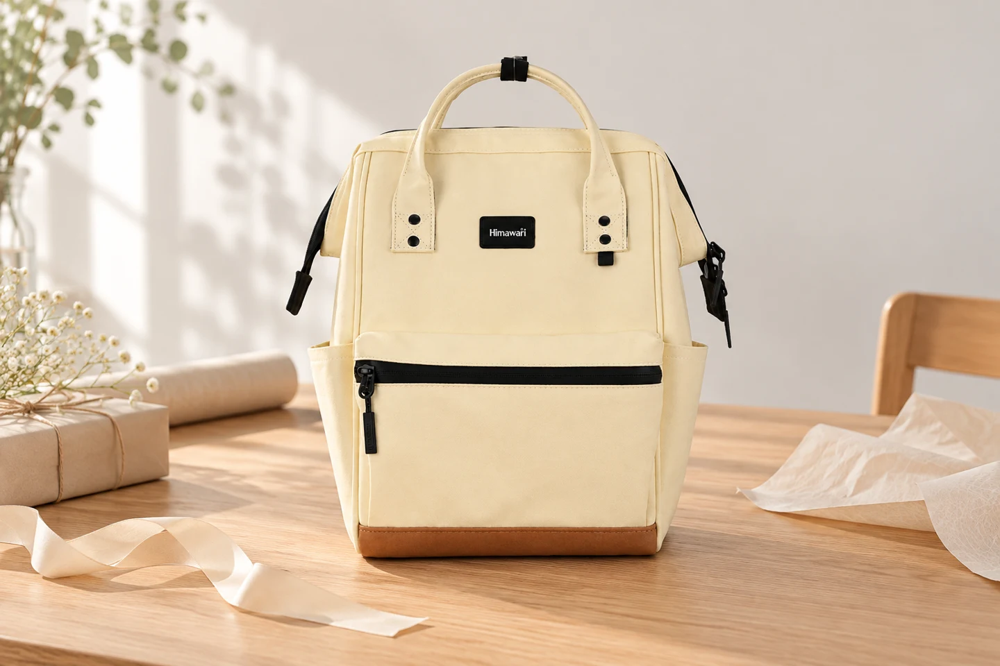
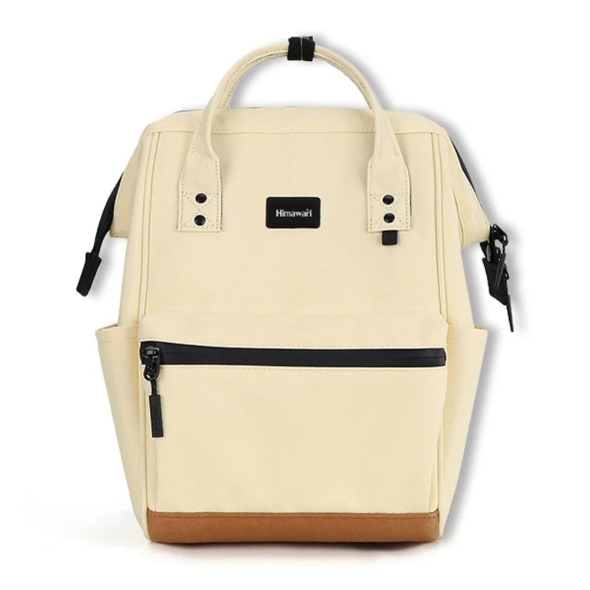

백팩 선물의 후보를 줄이는 질문

가방을 선물하려고 제품을 보면 내가 좋아하는 디자인부터 고르기 쉽습니다. 매일 메는 사람은 따로 있으므로 어떤 하루에 쓸지 들으면 후보를 좁힐 기준이 생깁니다. 상대의 취향을 모두 알아맞히려 하기보다 실제로 겪는 불편과 들고 다니는 물건을 구체적으로 묻는 방식입니다. 선물할 모델을 처음부터 공개하지 않아도 지금 쓰는 가방에 관한 대화를 시작할 수 있습니다.
지금 가방에서 무엇이 불편한지
질문은 현재 사용하는 물건에서 시작합니다. 안쪽을 찾기 어렵다는 것인지, 작은 소품이 섞인다는 것인지, 손에 들고 이동하는 순간이 많은지에 따라 살펴볼 부분이 달라집니다. ‘가벼운 것이 좋다’는 답을 들었다면 가방 본체와 평소 짐 가운데 무엇이 부담인지 더 물을 수 있습니다. 답에 들어 있지 않은 사용 조건을 선물하는 사람이 임의로 채우기보다 실제로 불편했던 장면을 알아봅니다.
불편한 점이 없다고 답할 수도 있습니다. 새 가방이 꼭 필요한지, 지금의 가방과 다른 날에 사용할 후보를 원하는지 이야기해 볼 수 있습니다. 이미 잘 쓰는 색이나 형태를 다시 고른다고 선물의 의미가 줄어드는 것은 아닙니다. 상대가 익숙한 구성을 유지하고 싶다면 그 선택을 기준으로 후보를 봅니다. 선물하는 사람이 원하는 변화와 받는 사람이 사용할 목적을 함께 읽는 대화입니다.
가장 자주 쓸 하루와 큰 소지품
출근, 수업, 주말 외출 가운데 주로 쓸 장면을 정합니다. 하나의 제품이 모든 장면에 적합해야 한다는 목표를 먼저 세울 필요는 없습니다. 실제로 자주 들고 다니는 가장 큰 물건을 확인합니다. 기기나 파일을 넣는다면 물건의 실제 크기와 사용하는 보호재를 함께 받아 제품 정보와 비교합니다. 이름이나 화면 크기만으로 적합성을 정하지 않고 필요한 내부 정보를 질문할 수 있습니다.
가방을 메는 시간과 손에 드는 순간도 알아봅니다. 집에서 이동하는 방식과 사용하는 공간에 따라 필요한 질문이 다를 수 있습니다. 가령 사물함을 이용한다면 실제로 보관할 자리도 생각할 수 있습니다. 이런 대화는 특정 모델의 기능을 미리 정답처럼 요구하는 것이 아니라 상대의 하루를 후보 선택에 연결하는 과정입니다. 모르는 조건은 물어볼 항목으로 남겨 구매 전에 확인합니다.
Himawari No.124S을 선물 후보로 본다면 먼저 받은 답과 관련 있는 항목부터 읽습니다. 제품 이름을 공개하지 않은 상태에서도 자주 쓸 장면과 큰 소지품, 원하는 색의 방향을 알아볼 수 있습니다. 나중에 후보를 보여줄 때에는 왜 그 모델을 골랐는지 상대의 사용 조건으로 설명합니다. 선물하는 사람이 좋아한 사진만이 선택 이유가 되지 않도록 대화의 내용을 남겨두는 방법입니다.

색을 보여줄 때에는 선택 이유도 듣는다
서로 구분되는 두 색 후보를 보여주면 상대가 선호를 설명하기 쉽습니다. 어느 쪽이 더 예쁜지에 더해 평소 옷과 어떤 색을 함께 쓰고 싶은지 들을 수 있습니다. 화면의 인상이 실제 색과 같다고 단정하지 않고 공식 옵션 표시를 확인합니다. 상대가 지금 쓰는 가방과 비슷한 색을 고르면 그 이유도 선택의 단서로 삼습니다. 다른 색을 설득하는 일보다 실제로 손이 갈 후보를 알아보는 것이 목적입니다.
색 외에 장식이나 형태를 비교할 때에도 서로 다른 점을 분명히 보여줍니다. 여러 후보를 한꺼번에 늘어놓으면 선택 이유가 흐려질 수 있으므로 앞서 들은 조건으로 먼저 줄입니다. 각 후보가 어떤 질문에 답하는지 정리하고, 확인되지 않은 기능은 장점처럼 설명하지 않습니다. 상대가 직접 고르고 싶다면 마지막 후보를 함께 보는 과정을 선물 준비에 포함할 수 있습니다.
받은 답을 한 문장으로 정리한다
가상의 선택 메모로 ‘주로 출근할 때 쓰고, 가지고 있는 파일을 꺼내기 쉬운 구성을 원함’처럼 정리할 수 있습니다. 실제 답을 들은 경우에는 그 내용을 기준으로 씁니다. 후보별 제품 정보에서 그 조건을 확인할 수 있는지 대조하고 모르는 항목은 문의합니다. 상대의 말이 기능 목록으로 바뀌는 과정에서 의미가 넓어지지 않도록 원래의 장면과 연결합니다.
선물 일정이 있다면 현재 배송 안내를 확인하고 필요한 준비 시간을 계획합니다. 배송일이나 교환 조건을 기억으로 정하지 않습니다. 받아 본 뒤에는 주문한 모델과 색상, 구성품이 맞는지 확인합니다. 제품 택과 안내 자료는 실제 사용 확인과 필요한 절차에 맞춰 보관합니다. 예쁜 포장을 서두르느라 선택한 옵션의 확인을 건너뛰지 않으면 이후에 무엇을 고른 선물인지 설명하기도 쉽습니다.
포장을 열고 직접 쓸 여지
받는 사람이 자기 물건을 넣고 사용 안내에 맞춰 착용해 볼 수 있도록 준비합니다. 선물용 사진의 모습에 맞게 짐을 채우기보다 실제로 쓸 구성을 확인합니다. 느낌이 예상과 다르면 무엇이 다른지 함께 읽고 해당 구매 안내에서 가능한 절차를 확인합니다. 상대가 필요하다고 말한 조건과 실제 사용에서 드러난 조건은 바뀔 수 있으므로 첫 선택을 무조건 유지해야 한다는 부담을 더하지 않습니다.
선물 메시지를 남기고 싶다면 모델의 장점을 과장하기보다 함께 이야기한 사용 장면을 짧게 담을 수 있습니다. 실제로 들은 이야기와 고른 이유가 연결되면 받는 사람도 선택을 이해하기 쉽습니다. 가방을 포장하기 전에는 끈과 지퍼 장식이 꼬이거나 눌리지 않은 상태로 정리합니다. 한 번의 선물 준비 안에서 취향 대화와 제품 확인, 실제 사용의 시작이 이어지도록 마치면 됩니다.